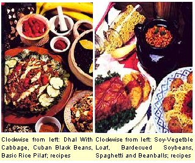
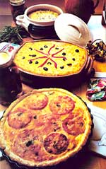
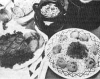
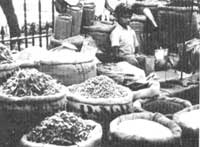

Are you thinking of reducing the amount of meat in your diet, or just looking for a tasty alternative to beef and potatoes? You'll find some help in MOTHER's mini-manual.
A person has only to browse through the cookbook section in any local bookstore to conclude that vegetarianism can no longer be considered a fad, as it was only ten years ago. With the fitness phenomenon reaching an all-time peak, more and more people are searching for a more healthful diet . . . and for many, that means cutting back on meat, or even eliminating it from their table. Furthermore, vegetarianism-be it full- or part-time-has also received the nod from the American Dietetic Association, the National Cancer Institute, and the American Heart Association.
But just how practical is a vegetarian diet, anyhow? As more and more folks join the ranks of "rabbit-food munchers," it becomes essential to dispel the myth that vegetarian food consists largely of carrots and lettuce. The majority of people who eschew meat altogether fall into the lacto-ovo vegetarian slot: They eat a variety of grains, nuts, beans, fruits, and vegetables, as well as eggs and all dairy products. A little more strict are the lacto vegetarians, who eliminate eggs from the above list. The real hard-liners are the vegans (pronounced VEH-jun), or "pure" vegetarians, who consume no animal products at all.
Unfortunately, a good many folks who might otherwise dive wholeheartedly into a low- or no-meat diet (for reasons of health, ecology, economics, ethics, or whatever) hesitate out of fear that they won't be able to provide their bodies with the necessary vitamins and minerals on a vegetarian regimen. And some people-particularly those with hearty appetites-quail before the question of what to eat in place of the familiar meat, fish, and poultry. (The popular image of an anemic wisp of a person munching on sprouts and nuts dies hard!)
However, these worries can be laid to rest. The basic vegetarian diet is a totally healthful way of eating, one that offers the body a full array of vitamins and minerals and ample caloric energy to keep the human machine humming along.
And you have only to glance through the pages of vegetarian cookbooks to be assured that you'll eat handsomely on nonmeat fare. Vegetarian cookery is a rich and varied cuisine, full of marvelous dishes that suggest a whole new style of, and reverence for, eating. Most folks who make the transition to vegetarianism find that, rather than feeling limited by their new diet, they're actually overwhelmed with the spectrum of tasty meal possibilities.
Back in elementary school, we all memorized the famous Four Food Groups, representing those categories said to be necessary for a well-balanced diet. Basically, that was sound advice, and it needs only slight modification to be applicable to a meatless diet. From Laurel's Kitchen (see the accompanying source list), here's an updated and revised version of the Four Food Groups, which offers a varied and safe way to nourish the body without including meat: [1] vegetables (yellow and leafy green), [2] fruits, [3] dairy products and eggs, and [4] grains, legumes, nuts, and seeds. Choosing three or more servings every day from each of these divisions will ensure the lacto-ovo vegetarian a supremely healthy diet. For a vegan regime, in which the dairy food/egg category is not used, it's necessary to combine plant foods carefully in order to ensure adequate protein intake.
Protein is probably the biggest bugaboo faced by the potential or neophyte vegetarian. But not to worry. Getting one's adequate share of daily protein is no problem for the conscientious vegetarian, even for the vegan. In fact, ensuring that you consume enough protein every day is now generally considered to be even easier than it was ten years ago.
But first, why is protein so important? Aside from water, protein is the most plentiful substance in the human body and is vitally important for building muscles, skin, hair, nails, and internal organs. Protein-a complex of carbon, hydrogen, oxygen, nitrogen, and usually sulfur-is also an important ingredient in hemoglobin (the substance that carries oxygen in the blood) and in antibodies, as well as in the production of enzyme and hormones.
We can't, however, obtain protein directly from the food we eat. Rather, we must collect the 22 amino acids that serve as its "building blocks," so that the body can manufacture its own protein supply. All but eight of those 22 acids are present in the body, and those eight are therefore labeled "essential" (since they have to come from the food we eat). The essential amino acids are isoleucine, leucine, lysine, methionine, phenylalanine, threonine, tryptophan, and valine. (Children require an additional one, histidine.) Unless all eight are present in the system at the same time, no synthesis of protein can take place . . . and herein lies the major difference between a meat-centered and a plant-based diet. Animal foods already contain all the necessary building blocks for protein: They are "complete" proteins. Plant foods, however, with the notable exception of the soybean, are "incomplete" proteins-low in one or more of the eight essentials. It's obvious, then, that anyone who eliminates meat from his or her menu must make certain that the plant foods are augmented in some way to make complete proteins. And that's done through the principle of protein complementarity, first brought into the limelight in this country with the publication of Frances Moore Lappé's now familiar Diet for a Small Planet.
The process of protein pairing involves serving together foods that have complementary amino acid makeups. That is, each partner's strengths make up for the other's weaknesses. For example, grains generally contain very little isoleucine and lysine, so their obvious protein "buddies" would be legumes, which are moderately high in isoleucine and very high in lysine. On the other hand, legumes are low in tryptophan and methionine . . . giving them an amino acid profile that's the opposite of that of most nuts and seeds. Dairy products are especially high in the very amino acids lacking in cereal grains, providing another beneficial pairing. Based on these principles of complementarity, three important combinations of foods should be kept in mind (and used every day!) by anyone practicing a meatless diet:
[1] Grains + Legumes,
(2] Legumes + Nuts or Seeds,
[3] Dairy Products + Grains.
The lesson of protein complementarity, then, is a required course for any vegetarian cook (in fact, it usually occupies several pages in the front of most modern meatless cookbooks) . . . but the good news is that it's easier to master than you might expect. That's because protein complementarity has served for centuries as the basis of many traditional native cuisines around the world and is even present in some of our common American dishes.
For example, beans and corn (served in the form of tortillas with beans, or bean-filled enchiladas) are a South American staple, black beans and Cuban rice are a plat national all over the Caribbean, and lentils and rice-in countless variations-are served daily in India. The Orientals, too, have long known about protein complementarity; they combine soybeans (usually in the form of curd, or tofu) with rice throughout China, Japan, and the rest of Asia. Indonesians commonly serve tempeh (fermented soybean cakes) with their rice. In the Mediterranean, native peoples feast on specialties combining garbanzo beans and sesame seeds. Closer to home, the American Indians taught the early colonists to eat succotash (a tasty mixture of lima beans and corn). . . and our modern standards include cereal-and-milk breakfasts, peanut butter or cheese sandwiches for lunch, and dinners of pizza (wheat crust and cheese topping) or macaroni and cheese.
So you can see that ensuring a healthy daily allowance of protein is really no problem for the vegetarian. Yet the questions remain: How much protein do we really need, and what proportions are necessary to successfully balance the amino acids in complementary foods? Debatable issues, both . . . but there is a margin of error within which a non-meat eater can feel perfectly safe. The amount of protein a person requires is determined by his or her body size, age, sex, and levels of activity and stress. The general rule of thumb-as specified by the National Research Council's Recommended Dietary Allowance (RDA)-is that we should receive 10-15% of our total energy needs from protein... or about 0.424 grams per pound of body weight each day. Thus a 150-pound person would need 63.6 grams of protein daily.
It's widely suspected that the government's RDA's for some nutrients-most notably protein-are at least slightly exaggerated. Therefore, some nutritionists advise that it's wise not to become too alarmed over the matter of protein intake in a vegetarian diet. Instead of anxiously trying to compute your daily grams, Frances Lappé suggests that you learn to "read" your own body and notice whether it's carrying on its normal maintenance functions properly. How do your hair and fingernails look? Do minor wounds and sores heal quickly? Do you have enough energy to carry you through a normal day? If so, you're most likely receiving plenty of protein. During times of stress or under special physical conditions, however, the body's protein "appetite" increases (as metabolic processes accelerate). . . so the daily requirement is upped accordingly. A pregnant woman, for example, needs 30 extra grams of protein a day, while a lactating mother requires 20 extra grams. Babies and children under four years of age, according to the RDA of the U.S. Food and Drug Administration, need 28 grams of protein daily.
What about vitamins and minerals, though? Can the vegetarian diet substitute adequately for the important nutrients found in animal products? This often raised question tends to overlook the fact that most of the vitamins and minerals Americans consume come from the very plant foods that star in a vegetarian diet! Vegetables provide us with lots of vitamin A, vitamin C, folacin, riboflavin, and calcium. Fruits, of course, are nature's storehouses of vitamin C, as well as vitamin A and natural fiber... while grains and legumes contribute a long list of nutrients, including protein, carbohydrates, thiamin, niacin, vitamin E, iron, zinc, and magnesium. Even so, several important nutrients are often mentioned as matters of concern when meat is eliminated from the diet: calcium, the B vitamins, iron, and zinc. However, if the meatless diet includes dairy products, there is absolutely no danger of coming up short on those elements... and even the pure vegetarian diet can score well with just a little care and planning. In fact, one of the beauties of a vegan regime is that it helps restore the body's normal alkaline state (meat is a very acid-forming food) and thus actually reduces the need for base minerals, such as calcium. By receiving enough sunlight (to aid calcium absorption) and eating abundantly of dark, leafy greens and soy foods, even the vegan needn't have any calcium worries.
The only B vitamin of notable concern to vegetarians is B 12 (cyanocobalamin). Although humans need B 12 in very small amounts (the adult RDA is 3 micrograms), the vitamin is not widely available in plant foods, so the strict vegetarian must find special sources of B 12 . If dairy products are not included in the diet, a person may choose to get his or her B 12 from fermented soy foods (tempeh cakes or miso paste), nutritional yeast (a powdered supplement often used to make mock cheese), or spirulina (a blue-green microalgae now available-for rather high prices-in powder or tablet form). Of course, vitamin B 12 supplement pills are also available to the vegan and usually have to be taken only once a week.
Iron is another element that's commonly thought to be available only from flesh foods . . . but it is contained in plants, although in a form not as readily assimilated by the body. To ensure adequate iron intake, the vegetarian can eat lots of iron-rich foods (legumes, dark, leafy green vegetables, dried fruit, and molasses)... supplement these with vitamin C (from any citrus fruit) to enhance iron absorption . . . and use cast-iron cookware.
Fruits and vegetables, it's true, are generally poor suppliers of zinc, a trace mineral that's vital to enzymatic metabolism and reproductive functions. However, most whole grains and legumes (both of which play prominent roles in the vegetarian diet) provide ample amounts of zinc.
We've already explored the nutritional basis of protein complementarity; now let's examine the practical side of the matter. In other words, how in the world do you get all those little amino acids lined up in proper pairs when you're rushing to get dinner on the table? Just keep in mind those three basic combinations: grains with legumes, nuts or seeds with legumes, and dairy products with grains. Using those guidelines as a point of departure, you're limited only by your culinary imagination. Here are some suggestions to get you started.
In the grains plus beans category, an easy booster is two tablespoons of crunchy soy grits (cracked, partially cooked soybeans.) added to each cup of flour used in a recipe. Or try a rice-bean casserole, split pea soup served with whole wheat or rye bread, a lentil or bean curry served over rice, or corn tortillas with a refried-bean topping.
For the nuts or seeds plus legumes combination, you can sprinkle sesame salt over a bean casserole, put it in a garbanzo-carrot stew, or try making hummus (the Middle Eastern sandwich spread of mashed chick-peas and sesame meal). A similar Mediterranean delight is falafel ... a hummus-like dough that's shaped into balls, deep-fried, and served on whole wheat pita bread.
Dairy products and grains are another happy match in the world of protein pairing and probably offer the easiest combination to work with. By simply adding two tablespoons of nonfat dry milk to one cup of wheat or rye flour, you'll increase the dish's protein quality by 45%! You can also rely on macaroni and cheese, cereal and milk, rice-milk pudding, cheese sandwiches, barley and yogurt soup, or cheese and rice pilaf.
In addition to the three major complementary groups, other beneficial pairings include grains with nuts or seeds (whole wheat bread with tahini-sesame meal-or peanut butter)... dairy products with legumes (how about a cheese sauce over cooked garbanzos?)... or even grains with yeast (include a little nutritional yeast in bread dough or pancake batter, or sprinkle it on cereals and popcorn). Sesame seeds and Brazil nuts, by the way, are both high in methionine, the amino acid most lacking in dark, leafy greens... so sprinkle some over your next batch of steamed collards or kale for a taste and protein treat!
Surely a meatless cook's best friend is the soybean: Humble, trustworthy, and incredibly versatile, the little rotund legume is a joy to have around and to work with. Soy foods have been venerated in the cuisines of the Orient for thousands of years, but they've been "discovered" in Western kitchens only in the past 15 years or so, despite the fact that the United States produces two-thirds of the world's soybeans. Containing 35% protein by dry weight (more than any other unprocessed plant or animal food), the soybean is a nutritious little nugget: It contains no cholesterol, almost no saturated fat, lots of calcium, phosphorus, and B vitamins, and an extremely low ratio of calories to protein. In fact, the amount of usable protein contained in just one cup of cooked soybeans is equal to that in a five-ounce steak ... at a cost of only 234 calories!
The whole soybean itself can be used in a multitude of ways, because its bland taste is a natural "sponge" for almost any spice, herb, or dairy product. However, even when presoaked, soybeans take a long time to cook (about three hours by normal methods or 30-40 minutes in a pressure cooker), so it's best to make a double-or even triple-batch each time and freeze the leftovers. After cooking, they can be baked whole in casseroles (they're especially flavorful with cheese), added to soups, or stuffed into peppers... or you might want to mash them and add seasonings to make soy patties, loaves, cold sandwich spreads, or meatless "meatballs."
Soy flour is another, somewhat "sneakier," way to enjoy the solid nutritional bonus of soybeans. Simply add two tablespoons of soy flour to every cup of regular flour used in a recipe... and you'll have a nice low-fat, high-protein supplement that won't affect the dish's taste. (Soy flour is not normally used as the sole flour in bread making, since it contains no gluten, the "elastic" that is responsible for making the dough rise.)
Ah, tofu . This lovely, nutritious soy food has long graced oriental kitchens, and now it's migrating westward as well, fast outstripping all other soy foods in popularity. Sold most commonly in 12- or 16-ounce blocks, tofu (or soybean curd) is a creamy, low-calorie food that's packed with protein (which is increased even further when it's combined with rice or other grains).
Next time you're steaming vegetables, pop a few cakes of tofu right on top and-when they're warmed through-remove them from the pot and season them with soy sauce or tamari. You can also broil individual tofu cakes: Spread a generous layer of dark miso (fermented soybean paste that's available in health food stores) over the surface of each one, then place under your oven's broiler for five minutes... and you'll have a naturally salty treat.
Tofu can also be sliced and lightly fried in oil with a breading of cornmeal (or any flour you'd prefer), nutritional yeast, and salt and pepper. Use the browned tofu slices to create open-faced sandwiches (dressed with grated carrots, a sliced tomato, chopped onions, sprouts or lettuce, and spicy mustard), or dunk them into your favorite fondue or dipping sauce. If the tofu is cut into long, thin sticks before frying, you can wrap the cooked morsels in sheets of paper-thin nori seaweed, moisten the edges to make a seal, and pop them into your mouth as unusual hors d'oeuvres. Or marinate your tofu in a sauce that contains tamari, vinegar, and herbs... then fry as usual.
While it's impossible to list all of the excellent vegetarian cookbooks that are on the market these days, the following selection of standard vegetarian texts should get you started in developing your own vegetarian cooking library. You should be able to find most of these books at your local library or bookstore, and you can also order them from the addresses given below.
[1] Farm Vegetarian Cookbook , edited by Louise Hagler, is available for $6.95 plus $1.00 for shipping and handling from The Book Publishing Company, P.O. Box 99, Summertown, TN 38483. Ms. Hagler has also edited Tofu Cookery , which is available from Mother's Bookshelf (105 Stoney Mountain Rd., Hendersonville; NC 28791) for $9.95 plus $1.50 for shipping and handling.
[2] Laurel's Kitchen: A Handbook for Vegetarian Cookery and Nutrition , by Laurel Robertson et al., is a definite must for a vegetarian kitchen. You can order it for $4.95 plus $1.25 shipping and handling from Bantam Books, Inc., 414 E. Golf Rd., Des Plaines, IL 60016.
[3] Frances Moore Lappé's Diet for a Small Planet (10th Anniversary Edition) is an invaluable guide to protein pairing and an excellent overview of the world food situation (and what you can do about it). The book is available for $9.95 plus $1.00 for shipping and handling from Ten Speed Press, P.O. Box 7123, Berkeley, CA 94707.
[4] The Moosewood Cookbook and The Enchanted Broccoli Forest: And Other Timeless Delicacies , by Mollie Katzen, are two of the best collections of vegetarian recipes. You can order the books for $9.95 and $11.95, respectively, from Ten Speed Press al the address given above (include $1.00 per book for shipping and handling).
[5] Another excellent two-volume set-this one with a refined European flair-is The Vegetarian Epicure and The Vegetarian Epicure, Book Two , by Anna Thomas. These books are available for $7.95 and $8.95, respectively, from Random House, Inc., 400 Hahn Rd., Westminster, MD 21157 (include $1.00 per book for shipping and handling).
[6] The Book of Tofu (Revised Edition), by William Shurtleff and Akiko Aoyagi, is a complete guide to making and cooking with tofu, soymilk, and okara. It's available for $11.95 plus $1.50 for shipping and handling from Mother's Bookshelf at the address given above.
[7] The Deaf Smith Country Cookbook , by Marjorie Winn Ford et al., is chock-full of easy-to-prepare, tasty vegetarian recipes. It's available for $6.95 plus 35 cents for shipping and handling from Macmillan Publishing, Order Department, Front and Brown Sts., Riverside, NJ 08075.
Another fun-and, as it turns out, very traditional-way to prepare tofu is to convert it into age (ah-GAY), a deep-fried soy curd. First, press your tofu between absorbent towels with a cutting board and weight on top for about an hour. Then slice it into thin pieces or small cubes, and deep-fry them in 3-4 inches of vegetable oil until they float to the top and turn golden brown. Agé has a delicious crunchy texture and can be used in an almost infinite number of ways, thanks to its firm shape and low water content (enabling it to absorb flavors even more readily than regular tofu). You can broil chunks of agé along with vegetable pieces for a meatless shish kebab... sauté agé cubes along with mushrooms, bean sprouts, and grated gingerroot in a traditional oriental stir-fry ... or use them to "beef up" a hearty winter stew.
The rest of this mini-manual will have more ideas that should help make venturing into this brave new world of vegetarian cookery even more worthwhile!
It's hard to find a more healthful (or less expensive) food than the soybean. This versatile legume-which can be prepared in a multitude of ways, from soymilk to "ice bean" desserts to fermented tempeh-is low in starch and devoid of cholesterol while being high in protein, minerals, vitamins, and lecithin. The following four soybean recipes (which have been kitchen-tested in my home by three hungry men and rated excellent) should help you on your way to discovering a nutritious, tasty, low-meat diet.
Although the fastest way to cook soybeans (or any other dried bean) is in a pressure cooker-unsoaked soybeans will take about 40 minutes at 15 pounds of pressure-I generally prefer to soak the beans overnight and simmer them the next evening. I usually cook one or two pounds of soybeans each week, leaving half of them whole and grinding up the rest in my food mill. In this way, a single cooking gives me the basis for a week's meals with a minimum of effort. I also save and store the nutritious cooking water for later use in soups, breads, and other dishes.
To prepare your beans for cooking, sort through them and discard any discolored kernels, then rinse them. Presoak the beans by adding enough water to a pound of soybeans so that they're covered with two inches of liquid, and store them in the refrigerator overnight (the beans will nearly triple in size, so use a big pot).
After the legumes have soaked, skim off the film that will have formed, add a teaspoon of salt (and more water, if necessary), and bring the pot to a boil. Then reduce the heat and let the beans simmer until they're tender, a process that usually takes about three hours. When properly cooked, the soybeans should squish easily, but if they're too tender, they'll form a paste when you grind them up.
4 cups of cooked soybeans (you can substitute other beans for part of the soybeans or use 1 cup of cooked mixed vegetables in place of 1 cup of soybeans)
3/4 cup of catsup
1/4 cup of mustard
1/4 cup of molasses
2 tablespoons of brown sugar
1 teaspoon of chili powder
1/2 teaspoon of garlic powder a dash of Worcestershire sauce
To make this high-protein baked bean dish, combine the beans with the sauce ingredients and bake, covered, in a loaf pan in a 300°F oven for 2 to 3 hours. (For a sweeter, less spicy sauce, you might want to omit the chili powder and increase the sugar to 1/4 cup.)
Loaf:
3 to 4 cups of cooked soybeans, ground
2 carrots, grated
1 onion, diced
1/2 pepper, diced
1/2 cup of wheat germ
1/2 cup of bread crumbs
2 tablespoons of soy flour
1 teaspoon of paprika
1 teaspoon of salt
1/2 teaspoon of garlic powder
1/2 cup of yogurt
2 eggs, beaten
2 tablespoons of oil
Topping:
2 teaspoons of molasses
2 teaspoons of catsup
4 teaspoons of mustard
1 teaspoon of curry powder
Combine the main ingredients in the order given and place the mixture in a loaf pan. Drizzle the topping over the loaf and bake it in a 350°F oven for 45 minutes, or until firm.
SPAGHETTI AND BEANBALLS
2-1/2 cups of cooked soybeans, ground
1/2 cup of wheat germ
3 tablespoons of grated Romano or Parmesan cheese
2 tablespoons of chopped scallions or parsley
2 cloves of garlic, minced (or
1/2 teaspoon of garlic powder)
salt and pepper to taste wheat germ (for coating the beanballs) butter or margarine spaghetti noodles and your favorite tomato sauce
Mix together the first six ingredients and shape the resulting dough into 15 to 20 balls about 1-1/2" in diameter. Coat the balls with more wheat germ and then fry them in butter or margarine until they're lightly browned, turning them frequently as they cook. Then drop the beanballs into your favorite spaghetti sauce and simmer for 10 minutes. Serve over a bed of steaming spaghetti.
SOYBEAN-CABBAGE CASSEROLE
1 large cabbage (about 2 pounds), shredded
3 tablespoons of oil
1 tablespoon of soy sauce or tamari
1/2 teaspoon of sugar
1 teaspoon of salt
2 cups of cooked soybeans, ground
1 tablespoon of whole wheat or unbleached white flour
1 egg dash of pepper
1/2 cup of milk butter or margarine
In a large skillet, sauté the cabbage in the oil until it wilts, then add the soy sauce, sugar, and half of the salt. Cook this mixture, covered, for another 15 minutes. While that simmers, combine the soybeans, flour, egg, pepper, and remaining salt, then gradually stir in the milk. Alternate layers of cabbage and bean mixture, beginning and ending with the cabbage, in a greased two-quart baking dish . . . dot the casserole with butter or margarine . . . and bake it in a 350°F oven for about an hour.
You have to wonder when you see a 95-pound woman carrying a 200-pound load on her back over the Himalayan trails from dawn to dusk... and be still more amazed to discover that her body is fueled by rice and dhal. And you may be further surprised to learn that these simple foods-in the proper combinations-produce complete proteins, provide plenty of energy, and lend themselves to so much variety in preparation that even finicky tastes can be intrigued and convened.
The cookfires of the world offer many techniques for achieving a healthful diet while slashing food costs. These include developing new avenues of taste, focusing on foods in season, relying on low-cost carbohydrates as staple foods, using nonmeat forms of protein (and for those folks in transition to a vegetarian lifestyle, serving meat as a condiment rather than as a main dish), seasoning basic foods with a wide range of herbs and spices, and utilizing all leftovers.
My family and I used these methods of eating nutritious, low-cost meals during our backpacking trips to more than 100 countries around the world. Our son, Greg, who was four years old when we started our ten-month sabbatical, remembers meals of rice and dhal that he consumed in Nepal after hiking 14 miles or more in one day... and Laurie, one year of age at the time, developed an appetite for whatever came her way. Today, back in a suburban community, our family spends only $30 to $35 a week on food-$2,500 a year less than the U.S. average for a family of four-while actually enjoying a better diet than the typical American. Here's how it's done.
DEVELOP NEW AVENUES OF TASTE
The primary step in cutting a family's food budget is to Stretch tastes to include more types of food. In changing over to a vegetarian diet, you'll be introduced to new and delicious combinations of edibles. Study the cuisines of different cultures and look for low-cost staples that can be adapted to your new way of cooking. Select the unusual and inexpensive: A fruit cup tossed with unsweetened coconut (bought in bulk), for instance, offers a special touch associated with the South Pacific. Bananas-a staple in the tropics-are often inexpensive in this country. Try baking and sautéing them, whipping them into drinks, or drying banana slices for snacks and brown-bag lunches.
Let your crew at home help select countries from which they'd like to try foods. Huevos rancheros (eggs with spicy sauce), burritos, and tacos from Mexico are all made with healthy, inexpensive foods... as are meals of all-vegetable Indian curries served with rice and sliced cucumbers tossed with yogurt.
TO EVERY FOOD THERE IS A SEASON
In season is the time to buy. (In most countries of the world, where refrigeration is still a luxury, it is the only time to buy.) In the United States, we have great diversity in seasonal shopping, and newspapers often list the best buys at farmers' markets or similar produce centers. And, of course, if you're not already raising your own vegetables, consider picking up a spade. Subsistence farming is the normal way of life around the globe.
For the colder months, don't forget minigardens for powerfully good eating. Your kitchen can produce impressive quantities of sprouts-alfalfa, mung, and soybean... radish, cabbage, lentil, and wheat berry.
Canned goods also have seasonal fluctuations. Shop ahead, filling your larder as distributors seek to get foods out of the warehouse and off the supermarket shelves to make way for new harvests. Watch for such items as green beans, peas, corn, tomato products, frozen fruits and vegetables, and even nuts.
THE STAPLE FOODS
Throughout most of the world, people subsist on a few foods that can actually be counted on one hand: rice, wheat, or similar whole grains... corn... and potatoes or other roots and tubers. Add dried beans and you have the world's least expensive foods. What's more, these basic edibles require little processing (they're most nutritious when least processed), store easily in limited spaces, and lend themselves to a variety of cooking methods. Let's look at several of them more closely.
Legumes. Among the first plants ever cultivated, beans are still a great bargain. They're rich in protein, vitamins, and minerals, and when paired with whole grains, nuts and seeds, or dairy products, they provide complete proteins capable of replenishing the body's needs (so that you or the women on the Himalayan trails can keep going strong). Today, even greater emphasis is being placed on legumes as pan of the solution for a hungry world that cannot hope to exist with meat as a primary protein source.
Of all legume dishes, one of the simplest to prepare is dhal. This Indian standard may be seasoned to suit your tastes and served over a bed of rice as a nutritious main dish. The following recipe adds cabbage, a "hardware vegetable" that's easy to store for long periods of time.
DHAL WITH CABBAGE
1 cup of lentils or yellow split peas
1 medium onion, sliced
2 cups (or more) of water or vegetable stock
2 cups of shredded cabbage
1 /4 cup of olive or vegetable oil
1 large onion, chopped
1 clove of garlic (or 1/2 teaspoon of garlic powder)
1 small tomato, diced (or 1 tablespoon of tomato paste)
1 teaspoon of ground cumin
1 teaspoon of turmeric
1/2 teaspoon of mustard
1/4 teaspoon of cinnamon
1/4 teaspoon of ginger
1/4 teaspoon of ground coriander
4 whole cloves
2 tablespoons of lemon juice salt to taste
In a saucepan, boil the lentils or peas and the first onion in the water for about 15 minutes. Next, add the cabbage and continue cooking until the lentils are soft, adding more water if needed. Now, in a skillet, heat the oil and saute the second onion and garlic until they're golden, then add the tomato and seasonings (except the salt) and cook over medium heat, stirring constantly, for 5 minutes. Add the lemon juice, stir the mixture into the lentils, add salt as desired, and serve the dhal over steaming-hot brown rice. Accompany the dish with such condiments as sliced bananas, cucumbers with yogurt, or chopped tomatoes, green peppers, and raw onions. This recipe will provide four portions.
Here's another easy-to-prepare legume dish, one that's popular in the Caribbean.
CUBAN BLACK BEANS AND RICE
1 pound of black or turtle beans
3 cups of water or vegetable stock
1/2 cup of olive or vegetable oil
1 cup of chopped onion
1 clove of garlic, minced
1 green pepper, diced
2 teaspoons of salt
1 teaspoon of ground pepper
1 bay leaf
2 tablespoons of tamari
1/4 cup of wine vinegar hot cooked rice onion and hard-boiled eggs for garnish
Rinse the beans and cover them with water to soak overnight. The next day, drain the legumes, add about 3 cups of fresh water, and bring to a boil. While they're cooking, sauté the onion, garlic, and green pepper in oil, and when tender, add them to the beans along with the seasonings, tamari, and wine vinegar. Cover the pot and simmer the mixture until the beans are soft, adding more water if needed. Serve with hot brown rice and a garnish of chopped raw onion and sliced hard-boiled eggs. This recipe provides six generous portions.
Another way to use legumes is in sandwich fillings. Falafel, a Middle Eastern dish, is made by forming a bean mixture into small balls, deep-frying them, and tucking them into pita bread.
FALAFEL
4 cups of cooked garbanzo beans (2 cups soaked overnight and boiled until soft)
1 medium potato, cooked and mashed
1 or 2 eggs, beaten
1 medium onion, finely chopped
2 cloves of garlic, minced
2 tablespoons of chopped fresh parsley
1-1/2 teaspoons of salt (or more)
1 teaspoon of paprika
1/2 teaspoon of ground coriander or cinnamon
1/2 teaspoon of ground cumin
1/4 teaspoon of black pepper dash of cayenne juice of
1 lemon flour or fine bread crumbs vegetable oil
Drain and mash the cooked beans, then combine them with the potato, egg, onion, garlic, parsley, spices, and lemon juice. Chill the batter well, then form it into walnut-size balls and dust each one with flour or bread crumbs. Fry the rounds in 1-1/2" of hot oil in a heavy skillet until browned, then drain them on brown paper and serve them stuffed into pita bread, rolls, or french bread and garnished with yogurt, chopped tomatoes, and onions or shredded lettuce and tahini dressing. This recipe will feed about six.
Whole grains. In the Western world, we are just now rediscovering the importance of using whole grains. This group of foods requires only small additions of legumes or dairy products to create complete protein combinations. Serve barley as a side dish, millet as porridge, and oats not only for cereals and breads but also-buttered and browned-for crumb toppings. Rice, perhaps the most universal food, can be served in main dishes, desserts, and salads.
The Japanese call rice go-han , with han meaning "rice" and go meaning "highest reverence." This is the staple food for two-thirds of the world's people. For the most nutrition, rely on brown rice, which has the germ and most of the bran layer intact. One cup of brown rice provides 15 grams of protein and 154 grams of carbohydrate, while one cup of white rice has only about 4 grams of protein and 50 grams of carbohydrate. Brown rice also has double the iron and triple the calcium, niacin, and B1 and B2 vitamins, and it's high in phosphorus and sodium. What's more, brown rice just plain tastes better!
To save time and energy, always make rice in double batches, then use it in casseroles, egg dishes, salads, puddings, and stir-fried meals. Fried rice is quick to fix and unbeatable as a tasty money saver. Vary the dish by adding onions, shredded carrots, slivered green peppers and beans, minced cauliflower or broccoli, fresh sprouts, and thinly sliced zucchini. To turn the rice into a complete meal, add eggs, tofu, or cheese.
Pilaf is served in India and Pakistan for festive occasions, and can be made with just about any grain. Try substituting millet, cracked wheat, triticale, or barley in the following recipe.
BASIC RICE PILAF
1 onion, diced
1/4 cup of chopped mushrooms
1 small carrot, diced
1 stalk of celery or a green pepper, diced
2-3 tablespoons of olive or vegetable oil
1 cup of raw brown rice
2 cups of vegetable stock or water
1 teaspoon of curry powder or a combination of the following:
1 bay leaf a few cardamom seeds
1/2 teaspoon of turmeric
1/2 teaspoon of ginger
1/4 teaspoon of garlic powder
1/4 teaspoon of cumin
1/4 teaspoon of cinnamon
4 whole cloves
1/2 cup of chopped peanuts, pine nuts, sunflower seeds, or almonds
1/2 cup of raisins, currants, or other dried fruit
1 teaspoon of salt
Sauté the vegetables in the oil. When they're tender, add the rice and stir over moderate heat until the grains are dry. Then add the spices (except the salt) and the vegetable stock, cover, and cook for 20 minutes over low heat. Sprinkle in nuts, dried fruit, and salt and cook 10 minutes more. Check the seasonings, adding more salt if desired, and fluff just before serving. To make pilaf a main dish, melt cheese over the top or serve it with beans or a yogurt salad.
What food contains more protein than an omelet, more iron than spinach, and as much calcium as cottage cheese-all for as little as 25 cents per homemade pound? You guessed it: tofu. When my family was introduced to this oriental import, it was love at first bite. We were soon feasting on scrambled tofu for breakfast, sipping tofu shakes with lunch, enjoying bean curd burgers for dinner, and savoring slices of soy cheesecake for dessert.
However, with the nearest health food store some 30 miles away and our favorite food selling for $1.30 a pound, it wasn't long before our appetites outdistanced our pocketbooks. Necessity demanded that we make our own tofu, so for a few weeks I diligently mashed, boiled, strained, and curdled the soybeans... and usually came up with only a pound of bean curd to show for several hours' work. The results were tasty, though, and rather than becoming discouraged by our small return, we were all the more determined to make the process economically feasible.
The answer to our predicament was a homemade wooden press that can hold as much as 15 or as little as 2 pounds of soy cheese at one time. This efficient device enables me to strain the initial soymilk-and-mash mixture and to press the bean curd while the liquid is still near boiling, thus speeding up the tofu-making operation and sparing me some burned fingers and spilled whey. The press cuts down on the waste of useful by-products, as well: Since the bottom edge of the contraption fits snugly over a large basin, it's an easy matter to save the whey for use in baked goods, soups, or pet food. And when the tofu is firm, the front panel of the press lifts out to let the curd be cut and removed easily. What's more, the implement cost us only about $5.00 in materials and took a mere two hours to construct . . . and it saves us more than a dollar per pound of tofu each time we use it.
To make a tofu press, you'll need an assortment of pine lumber and plywood (our design requires 5' of 1 X 6 pine board for the sides, a 1' section of 1 X 12 pine board for the lid, and a 12-1/2" X 13-1/2" piece of 1/4" plywood for the base)... 18 to 20 No. 6 X 1-1/4" rustproof wood screws... a drill with 1/8", 9/64", and 3/16" bits... a circular saw or a handsaw... a chisel... a screwdriver... some sandpaper... and enough vegetable oil to coat the finished product.
First off, you'll need to decide what you'll be using to catch the soymilk and whey as they strain through the press, because it's best to make that container a permanent part of your tofu operation. The catching vessel should hold at least five gallons of liquid and be able to withstand temperatures up to 212°F. Our press is designed to fit snugly over a stainless steel basin that sits in our kitchen sink. Whatever container you choose-whether it's a plastic tub, large bucket, enameled canning pot, or similar vessel-you'll want to design your press so that two of its sides hang several inches over the edge of your catching pot, while the perforated bottom rests almost an inch below the top. (This design prevents the press from sliding off center and splashing out boiling liquid.)
Once you've calculated the size of your press, cut the two sides out of the 1 X 6 pine board (ours measure 16-1/2" in length). At each end of the side sections, cut out a small rectangle 3/4" up from the base and 2" in from the sides. Directly in from this indentation, cut a 3/4 "-wide vertical slice 1/4" into the panel, as shown in the drawing. (Because commercial lumber is measured before it runs through a planer, your 1 X 6 board will actually be 3/4" X 5-3/8". . . which is why the groove is 3/4" wide.)
Next, cut the front and back pieces from the remaining 1 X 6 board (ours are 12-1/2" long). These sections should fit securely into the side grooves. Thoroughly sand all the pieces and secure the back panel into place with four screws. The front panel is not screwed in, instead, it merely rests in the opposite slots so that you can slide it up and remove the pressed bean cheese with ease.
With that done, cut a base from the 1/4" plywood-ours measures 12-1/2" X 13-1/2"-sand it, and screw it onto the back and side panels, using four or five fasteners per side. Next, on the underside of the press, pencil a grid of 3/4" squares 1-1/2" in from each side and drill holes-using the 3/16" bit-at each crossing to allow for drainage. Then sand the board again, making sure to remove any loose chips in the holes.
Now measure to determine the appropriate size for the cover. The lid should slide easily down into the press to help squeeze out extra liquid, so leave about a l/8"gap on each side between the panels and the cover (our lid measures 10-3/4" X 11-3/4"). Cut the "cap" from the 1 X 12 pine board and sand it smooth.
Choose a scrap of wood to form a handle for the lid. We used a coping saw to shape an elegantly curved handle, but a simple 1" section of 1 X 6 would certainly work. Sand the handle and attach it to the center of the lid, using two screws.
All that's needed now is a quick coating of vegetable oil to protect the wood . . . and you're in (the tofu) business.
. . . AND USING IT
There are probably as many different ways to make tofu as there are varieties of this creamy soy cheese. William Shurtleff and Akiko Aoyagi, authors of The Book of Tofu , describe visiting hundreds of Japanese tofu masters, each of whom employed his or her own particular method of making bean curd. The most widely used method in this country is what I call the "two-step tofu technique," which produces a soy cheese very high in protein. To make 5 pounds of tofu using this method, you'll need 4 cups of dried whole soybeans, 10 to 12 quarts of water, and 2 tablespoons of nigari (a sea salt derivative used to curdle the milk) dissolved in 1 cup of water. (You can use other curdling agents, as well. Nigari forms large curds and adds extra minerals to the final product, while lemon or lime juice or cider vinegar makes a softer-and more tart-cheese. When substituting the juice for the nigari, use six times the amount called for and don't dilute it with water. Epsom salts, which can be used in the same amounts as nigari, is perhaps the least desirable coagulant, as it gives a slightly salty taste to the cheese and renders the whey inedible.)
Sort the dried beans and soak them overnight in about 12 cups of cold water. Then rinse the beans and puree them in a blender, using 1 cup of soaked beans to each quart of water (you can also use a food grinder or processor for this step, adapting as necessary). Pour the resulting slush into a large cooking vessel and bring it to a boil. Then reduce the heat and simmer for 20 minutes, stirring continually. This is one instance in which it pays to watch the pot: Soymilk can foam up and boil over very quickly.
When the mixture has cooked for the allotted time, situate your cheesecloth-lined press over the catch container and pour the hot liquid through. Cover the strained mash, or okara, with the folds of cloth, place the lid over it, and push down slowly to force out any excess soymilk. At this point, you might want to set aside a quart or two of fresh soymilk (it's especially tasty when mixed with a teaspoon of honey). Save the okara for later use, too.
Now, rinse out the large kettle and return the soymilk to the pot. Bring it to a near boil, then turn off the heat. Next, stir the liquid rapidly in one direction, pour in 1/3 cup of the diluted nigari, stir once or twice in the opposite direction, sprinkle in another 1/3 cup of the salt mixture, and cover the pot. After 3 minutes, lift the lid and softly poke the curds to determine if the whey has completely separated. If the whey is still milky, add the last 1/3 cup of the solution, stir it briefly, and wait another couple of minutes.
When the milk has completely curdled, pour it slowly through your cheesecloth-lined press, cover the curds with the cloth, place the lid on top... and plan on enjoying a delicious meal of tofu in about four hours.
EDITOR'S NOTE: Suggestions/or serving tofu and other soy foods can be found in the main article of this mini-manual. . . and for more detailed recipes, you can consult the cookbooks given in the source list. Back issues of MOTHER contain a wealth of information on and recipes for using tofu, as well: Issues 39-45 include a series of excerpts from The Book of Tofu, by William Shurtleff and Akiko Aoyagi, and more recent articles include "Cooking With Tofu" (No. 65, page 124) and "Toothsome Tofu Pies" (No. 87, page 42).
Ms. Prescott, author of this article, also contributed some recipes that use the leftover okara from making tofu... and you'll find these on page 36 of MOTHER NO. 83.
Something about food has a way of grabbing folks' attention. As soon as word got out around the office that we were doing a meatless mini-manual, various staffers began bringing in the recipes for their favorite vegetarian dishes.
So, in the spirit of sharing a good thing, here are some of those offerings, gleaned from various kitchens and cookbooks.
This recipe is one of those staff-of-life dishes: Nutritionally, it's an excellent combination of ingredients that complement one another in proteins, and its rich, full flavor of beans and corn makes it a family favorite.
Group I:
2 cups of cooked pinto or kidney beans
1 tablespoon of tomato paste
3 tablespoons of water
2 tablespoons of oil
1/2 cup of chopped onion
1/4 teaspoon of garlic powder
1 teaspoon of chili powder
1 teaspoon of salt
1/4 cup of sliced ripe olives
1/2 cup of fresh corn
1/2 green pepper, chopped
1/4 cup of chopped parsley
1/2 cup of chopped celery
Group II:
2-1/2 cups of cold water
1-1/2 cups of cornmeal
1 teaspoon of salt
1/2 teaspoon of chili powder
1/4 cup of grated cheese (or more)
Grind the beans in a blender or food mill, combine the tomato paste with the water, then set these aside while you sauté the onion in the oil. Combine all the Group I ingredients and let them cook over medium heat, stirring to prevent the beans from sticking. Adjust the seasonings to taste.
Next, combine all the ingredients in Group II, except the cheese, in a heavy skillet, and cook over medium heat, stirring constantly, until the cornmeal thickens and comes to a boil. Then spread 2/3 of the cornmeal mixture over the bottom and sides of a greased 8" X 8" pan . . . pour the bean mixture into the cornmeal crust... and spread the remaining cornmeal on top. Sprinkle the top crust with the cheese and cook in a 350°F oven for 1/2 hour.
This recipe, contributed by one of MOM'S staffers, is extremely easy to fix and provides a good use for leftover vegetables.
1-1/3 cups of evaporated milk or light cream
1/2 cup of vegetable oil
3 eggs
2 teaspoons of salt
1/4 teaspoon of pepper
1/2 teaspoon of minced garlic
1/2 teaspoon of Italian herbs
3 cups of cooked brown rice
1/4 cup of chopped onion
2/3 cup of chopped carrots
2 bunches of fresh spinach, steamed slightly (or 1 10-ounce package of frozen spinach, thawed) leftover vegetables added to taste
3 cups of shredded sharp cheese
In a large bowl, beat the milk, oil, and eggs until well blended, then mix in the seasonings. Next, add all of the remaining ingredients except for 1 cup of the cheese, and mix well. Now, transfer the ingredients to a lightly greased 3-quart casserole dish and place the remaining cup of cheese on top. Bake at 400°F for 1-1/2 hours.
This recipe's a favorite with several of MOM'S staffers... it's good for you as well as good-tasting!
3/4 cup of raw soybeans
3/4 cup of raw rye or wheat berries one of each, diced: scallion, carrot, cucumber, red onion pepper, stalk of celery
1 cup of cottage cheese
Marinade:
1/2 cup of cider vinegar
1/2 cup of mayonnaise
2 tablespoons of dry white wine juice of 1 lemon or lime
2 cloves of garlic, crushed
1 teaspoon of fresh fennel or dill
1/4 teaspoon of dry mustard
1/2 cup of freshly chopped parsley dash of basil salt and pepper to taste
Cook the soybeans and rye or wheat berries until tender, then add them to the marinade and chill the mixture. Add the diced vegetables, and then combine everything with the cottage cheese. Serve with alfalfa sprouts and tomato slices.
pastry for a 10" pie shell
10 ounces of cheese, grated (1/2 Swiss and 1/2 Gruyere suggested)
2 tablespoons of flour
2 large onions, sliced
4 tablespoons of butter
1 teaspoon of freshly chopped basil
2 large, firm tomatoes, sliced
2 large eggs
3/4 cup of cream nutmeg (optional)
Line a 10" pie dish with your favorite pastry and chill it. Then toss the cheese with the flour and set it aside. Melt the butter in a large skillet and sauté the onions until they begin to turn golden. Spread about 1/3 of the cheese over the bottom of the pie dish, then layer the onions on top. In the butter that's left in the pan, heat the tomato slices with the chopped basil for a minute or two, then arrange the mixture over the onions, and cover with the remaining cheese.
Next, beat the eggs with the cream and pour over the cheese. Sprinkle a little nutmeg on top, if desired, and bake the pie in a preheated 350°F oven for 35 to 40 minutes, or until the top browns nicely. Serve hot, in wedges, to six hungry cheese lovers.
EDITOR'S NOTE: The Tamale Pie recipe is reprinted from Laurel's Kitchen, by Laurel Robertson et al. (copyright © 1976 by Nilgiri Press), with permission of the publisher. The Perfect Protein Salad recipe is reprinted from The Moosewood Cookbook, by Mollie Katzen (copyright © 1977 by Mollie Katzen), with permission of the publisher, Ten Speed Press. The Savory Cheese and Onion Pie recipe is reprinted from The Vegetarian Epicure, by Anna Thomas (copyright © 1972 by Anna Thomas), with permission of the publisher, Random House. For access information, see above.
|
 Top to bottom: Green Rice Casserole, Tamale Pie, Savory Cheese and Onion Pie; recipes |
 |
 |
|
 |
|
|
|
|
|
|